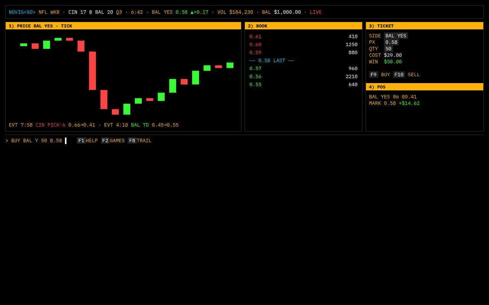
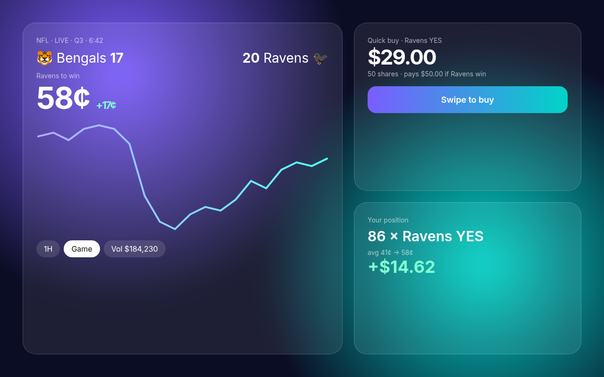
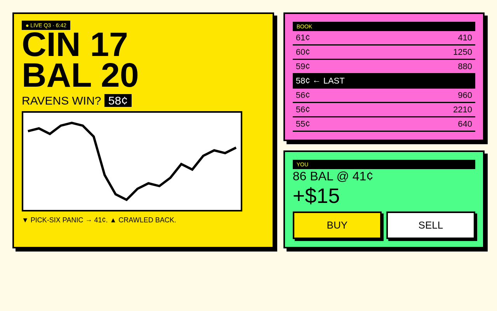
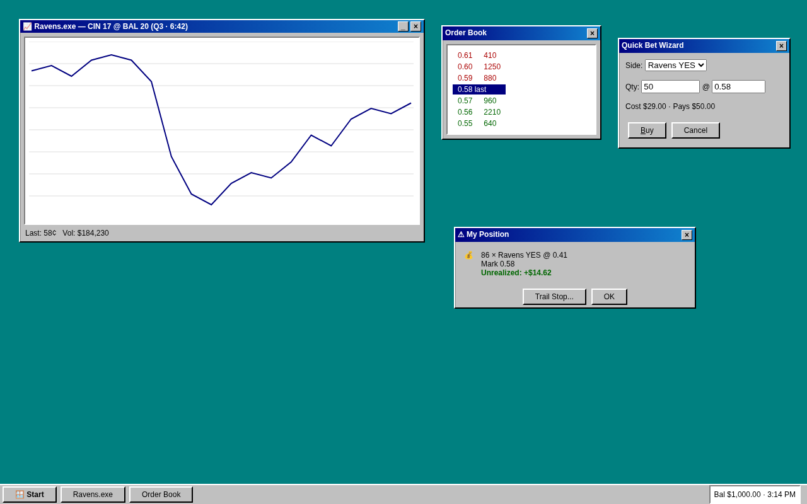
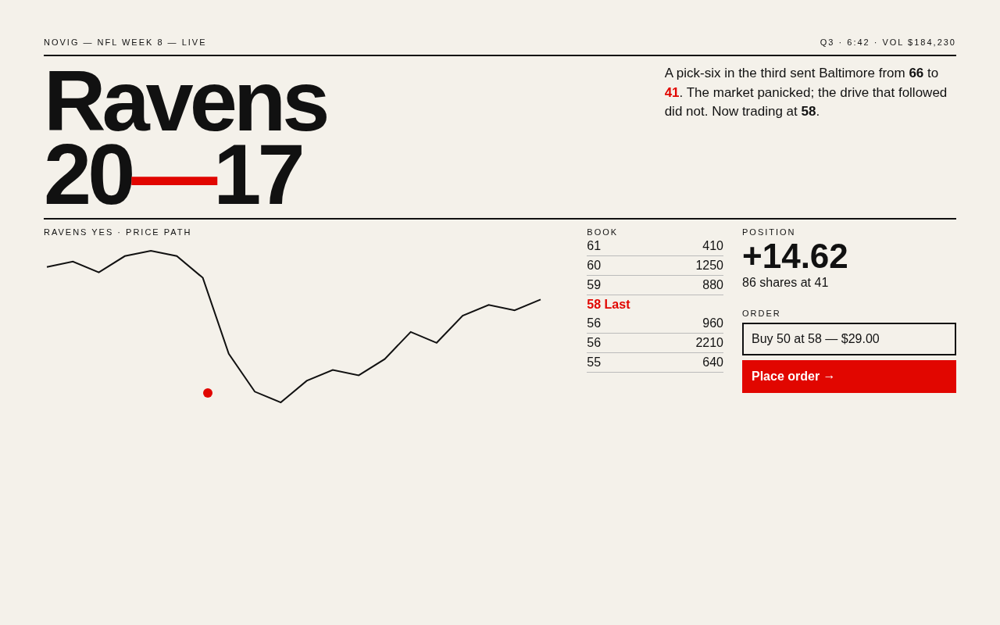
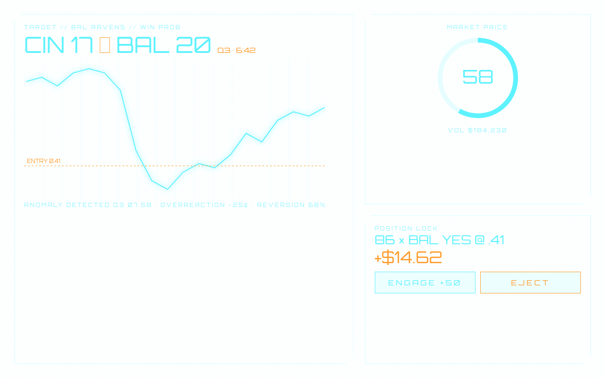
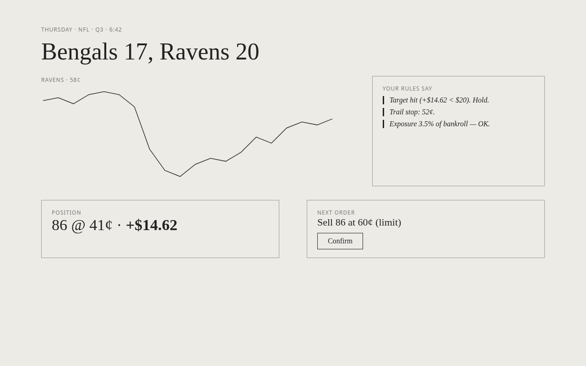
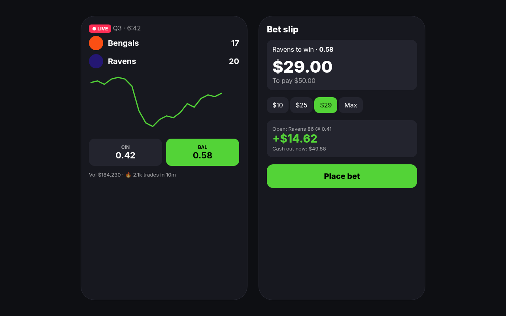

Novig UI concepts — round 1
Sample: CIN @ BAL, Q3, Ravens YES 0.58 after a pick-six overreaction. Your position 86 @ 0.41 (sample).

Bloomberg Terminal
Density over decoration: amber-on-black, monospace, keyboard-first, every pixel is data.
Aurora Glass
Calm premium consumer fintech: frosted panels floating over a soft gradient, big numbers, generous space.
Neo-Brutalist
Loud, honest, tactile: thick black borders, hard offset shadows, flat primaries, giant type. Feels like a fanzine trading desk.
Windows 95 Desktop
Nostalgic neo-retro OS: each widget is a draggable window, bevels and system fonts. Your Soul Reaver era, made playful.
Swiss Editorial
International Typographic Style: strict grid, one red accent, the game told like a newspaper front page.
Sci-Fi HUD
Tactical heads-up display: cyan wireframes, corner brackets, scanlines, radial gauges. The game as a mission.
E-Ink Calm
Paper-quiet, grayscale, serif: designed to lower heart rate mid-swing and make rules louder than noise.
Neon Sportsbook
DraftKings/Kalshi energy: dark, team colors, chunky tap targets, live pulse — built for thumbs and speed.